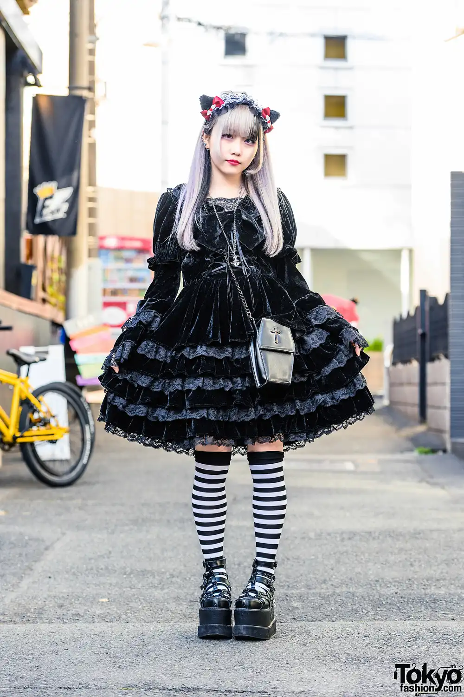

Gothic Lolita is a style of Lolita that is primarily influenced by victorian-inspired Goth styles. The style was popularized by Mana, a japanese musician. Common motifs in Gothic Lolita often include crosses or religious themes, bats, skulls, coffins, chandeliers, deep red roses, and castles. Darker colors, such as black, navy and royal blue, maroon, crimson, and deep purples are all common in Gothic Lolita. Black and white color combinations are somewhat taboo, but can be and have been done tastefully. Common makeup includes dark lipstick (in wine, red, deep purple or even dark brown), smokey or neatly defined eyes, and light blush, although as with all Lolita sub-styles the look remains fairly natural. Black lipstick is almost never worn. Accessories for Gothic Lolita include bows or headdresses, simple bags, such as purses adorned with Gothic motifs, or more extravagant bags and wallets, and dark or black tights, stockings, or knee highs with lace tops. Jewelry tends to have gems in dark colors and silver and metal tones are more common than golden ones. Venice lace chokers or a rosary are often worn. Lace gloves are quite popular in this style.

gothic lolita
what's gothic lolita?


characteristics
